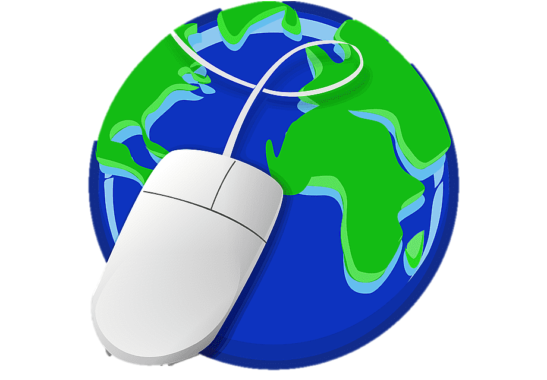
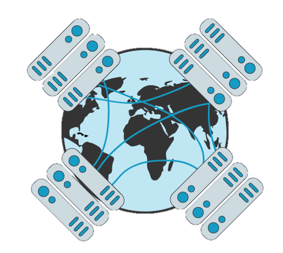
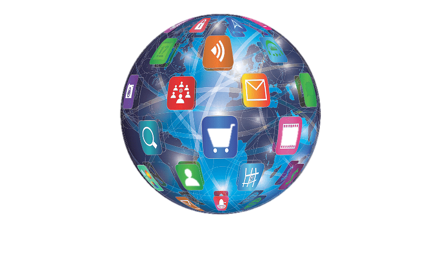
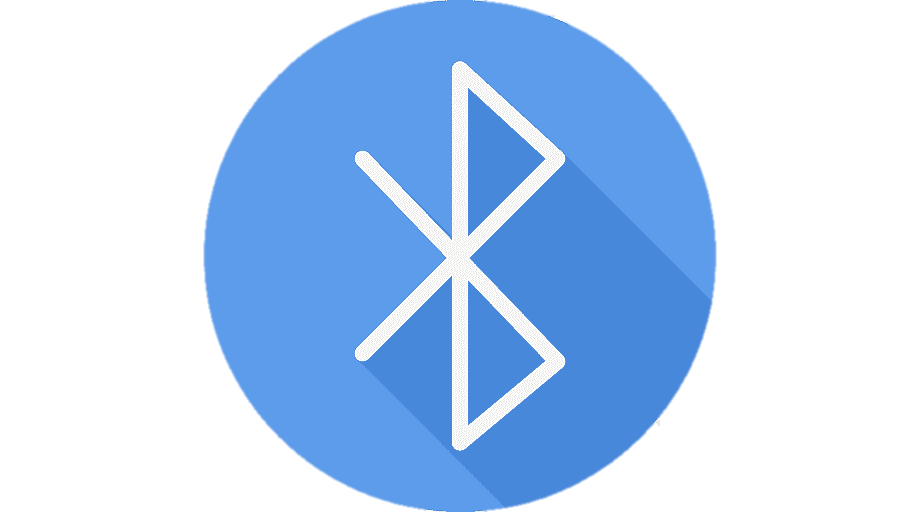

World Wide Web | |
|

Las siglas www para World wide web que significa literalmente red global. También se le llama simplemente como "la web" y es uno de los sistemas distribuidos de gestión de información que usan Internet o la red para la transmisión de datos. La web (www) usa el protocolo HTTP, siglas para Hypertext Transfer Protocol, para transmitir datos por Internet como es el caso de las páginas web. El World wide web es el sistema más famoso de todos los que circulan por la Internet y es por ello que se confunden y se consideran sinónimos. Historia e importancia La propuesta original de la Web fue redactada en la CERN (European Organization for Nuclear Research) en el año de 1989 por Sir Timothy John Berners-Lee, tomando como idea precursora a un proyecto jamás materializado llamado Memex. Ideado por Vannevar Bush en 1945, consistía en un dispositivo que almacenaría documentos de todo tipo que serían consultado y editados a través de una especie de teclado con palancas. El 12 de Marzo de 1989 es conocido como el nacimiento de Internet, y posiciona Berners-Lee como padre. La propuesta formal de la Web fue presentada oficialmente en la CERN el 12 de Noviembre de 1990 en parte gracias a la colaboración de Robert Cailliau. Como miembro de la CERN, fue quien decidió tomar la idea de Berners-Lee y ayudó tanto en la redacción como en la provisión de recursos para concretar el proyecto. A finales de 1990 ya habían construido el primer servidor Web en un sistema Next, y el primer software navegador-editor de páginas. Sin embargo, no fue hasta abril de 1993 cuando la CERN decidió permitir el uso libre y gratuito de la Web a la comunidad. La aparición del primer navegador Web MOSAIC de la NCSA (National Center for Supercomputer Applications) marcó el comienzo oficial de la Web como un sistema orientado a la comunidad. La aparición de la Web cambió el mundo para siempre. Permitió nuevas y diversas formas de acceso remoto a la información, cambiando así el modo en que investigamos y superando distancias enormes para permitir la comunicación. El envío de información confidencial, la promoción e incluso venta de productos, la incorporación del usuario a comunidades sociales (redes sociales) y lúdicas, en fin, una gigantesca variedad de actividades están disponibles al ser humano de hoy gracias a este nuevo espacio informático. Desde luego, esto también ha tenido repercusiones de cuidado, como son una nueva dimensión del delito (delitos informáticos o cibercrimen), un acceso irrestricto de los usuarios a todo tipo de información: legal o ilegal, sensible o pública, íntima o divulgativa, lo cual constituye un reto a la hora de filtrar y acudir a fuentes confiables, o de proteger a los infantes de la sobreexposición informativa. Funcionamiento:  La Web opera en base a un procedimiento de tres grandes pasos, que son: Traducción. La dirección URL (la que se introduce en el navegador) se vincula a una dirección IP a través de una gran base de datos distribuida de Internet (llamada DNS). Una vez obtenida la dirección IP, se establece la comunicación entre el usuario y el servidor web, e inicia la transmisión de datos. Petición HTML. El navegador entonces solicita el recurso y obtiene las partes de la página web a partir de los recursos solicitados para los gráficos, el texto, etc. Renderización. El navegador entonces sigue las instrucciones del código html o ccs para ensamblar la página web de manera correcta, poniendo cada gráfico en su sitio y cada texto como debe lucir. El usuario entonces puede verla en pantalla y podrá, a su deseo, saltar a otras similares. Caracteristicas: La Web es una dimensión de intercambio informativo y de telecomunicaciones multimediática, interactiva y a distancia, en la que se reflejan en gran medida los conocimientos, actitudes y comportamientos del ser humano. Estadísticamente, se estimaba en 2002 que de 2.024 millones de páginas web existentes, un 56,4% estaban en idioma inglés, frente a un 7,7% en alemán, 5,6% en francés y 4,95% en japonés, seguido de un 4% en español. Muchos acusan esta predominancia del idioma anglo de servir como un mecanismo de imposición de la lengua y la cultura (estadounidense) en el resto del mundo, operando así como un agente imperialista en el corazón de la globalización informática. Sin embargo, otros estudios acusan la tendencia hacia la constitución más bien de una cultura 2.0, es decir, una cultura propia de los medios digitales que trascendería los límites tradicionales impuestos por fronteras y culturas. WIFIWifi es una tecnología de comunicación inalámbrica que permite conectar a internet equipos electrónicos, como computadoras, tablets, smartphones o celulares, etc., mediante el uso de radiofrecuencias o infrarrojos para la trasmisión de la información.Wifi o Wi-Fi es originalmente una abreviación de la marca comercial Wireless Fidelity, que en inglés significa ‘fidelidad sin cables o inalámbrica’. En español, lo aconsejable es escribir wifi sin guion, en minúscula y sin cursivas. Además, se puede emplear de igual modo en masculino o femenino, dependiendo de la preferencia y del contexto: la (zona) wifi, el (sistema) wifi. Funcionamiento Para su funcionamiento, el wifi necesita de un equipo (enrutador o router) conectado a internet y dotado de una antena, para que a su vez redistribuya esta señal de manera inalámbrica dentro de un radio determinado. Los equipos receptores que se encuentren dentro del área de cobertura, al mismo tiempo, deben estar dotados con dispositivos compatibles con la tecnología wifi para que puedan tener acceso a internet. Mientras más cerca se encuentren los equipos de la fuente de la señal, mejor será la conexión. BLUETOOTH El término Bluetooth describe una tecnología de red desarrollada por el grupo de trabajo IEEE 802.15.1 del Institute of Electrical and Electronics Engineers estadounidense como estándar industrial para conexiones inalámbricas. La tecnología Bluetooth sirve para la transferencia de voz y datos punto a punto sin conexión u orientada a la conexión entre dos dispositivos digitales diferentes. El objetivo principal de esta tecnología es reemplazar las conexiones por cable, es decir, dejarlas obsoletas, lo cual supone una ventaja, sobre todo, para dispositivos móviles como smartphones o tabletas.HistoriaDesde que en 1999 apareció la primera versión hasta este mismo año en el que se ha publicado la versión 5.2, muchos cambios y actualizaciones han hecho del Bluetooth una tecnología referencial en la sociedad. La primera versión, 1.0a, junto a la posterior 1.0b se enfrentó a diversos problemas de seguridad y la imposibilidad de garantizar el anonimato en la transmisión de datos. Con Bluetooth 1.2 fue posible empezar a utilizar dispositivos USB y se creó Discovery, el software encargado de detectar otros aparatos que estuviesen conectados por Bluetooth para compartir información. |
Menu |